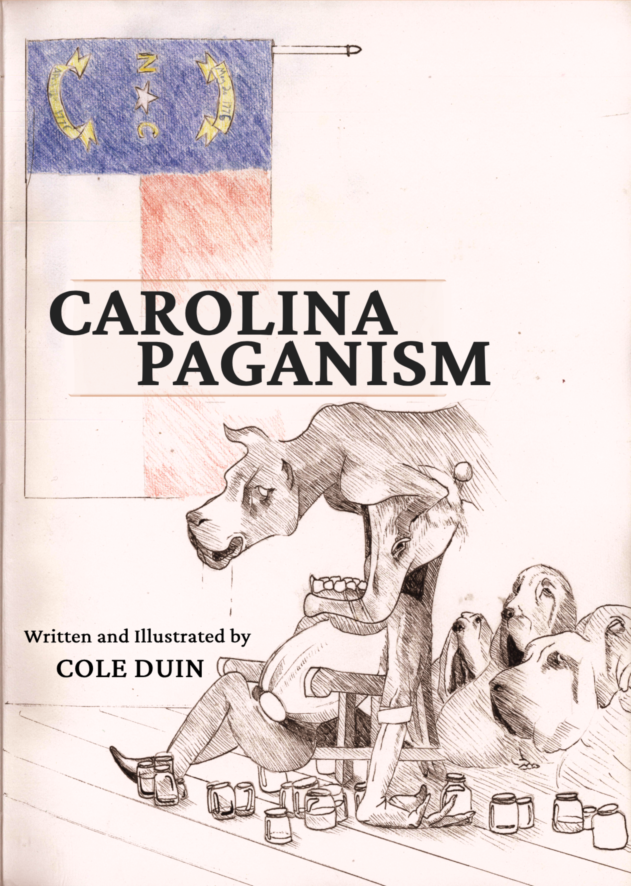

A collection of short stories set in a Paganistic Appalachia

Carolina Paganism is a collection of writings on an alternative Appalachia steeped in paganistic acculturation. Here there are ethnic halloweeners, racist haunted house operators, idol worshipping confederates, and rodeos gone wrong, among much else :3
Available now through Amazon.
No. I won't tell you anything XD.